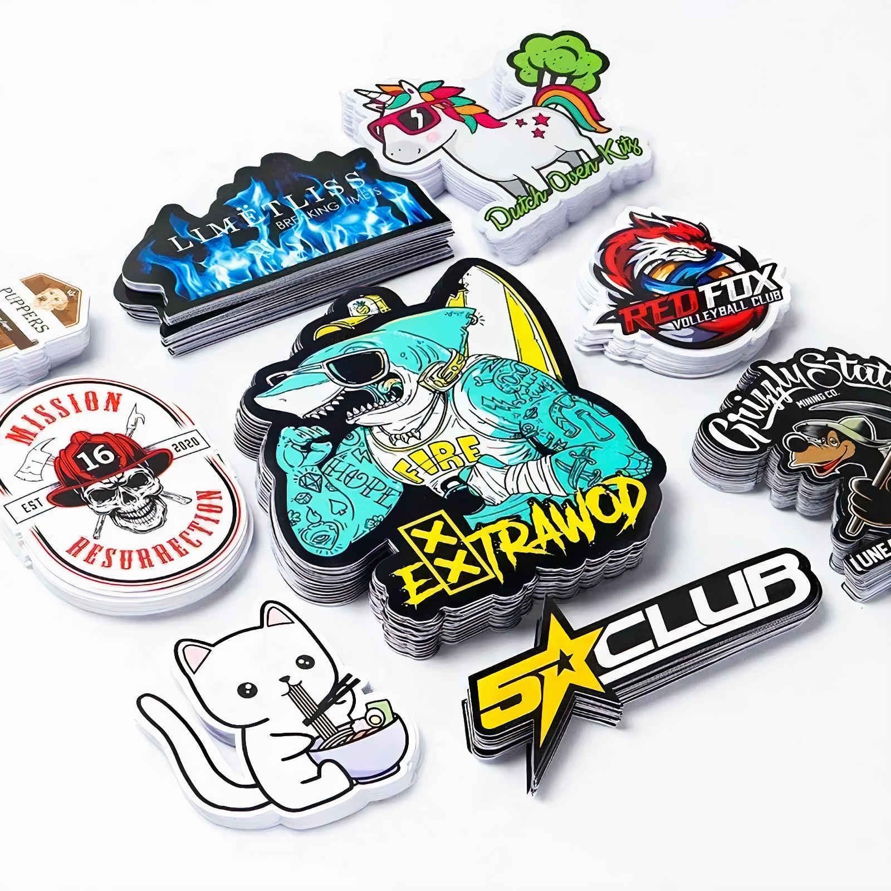
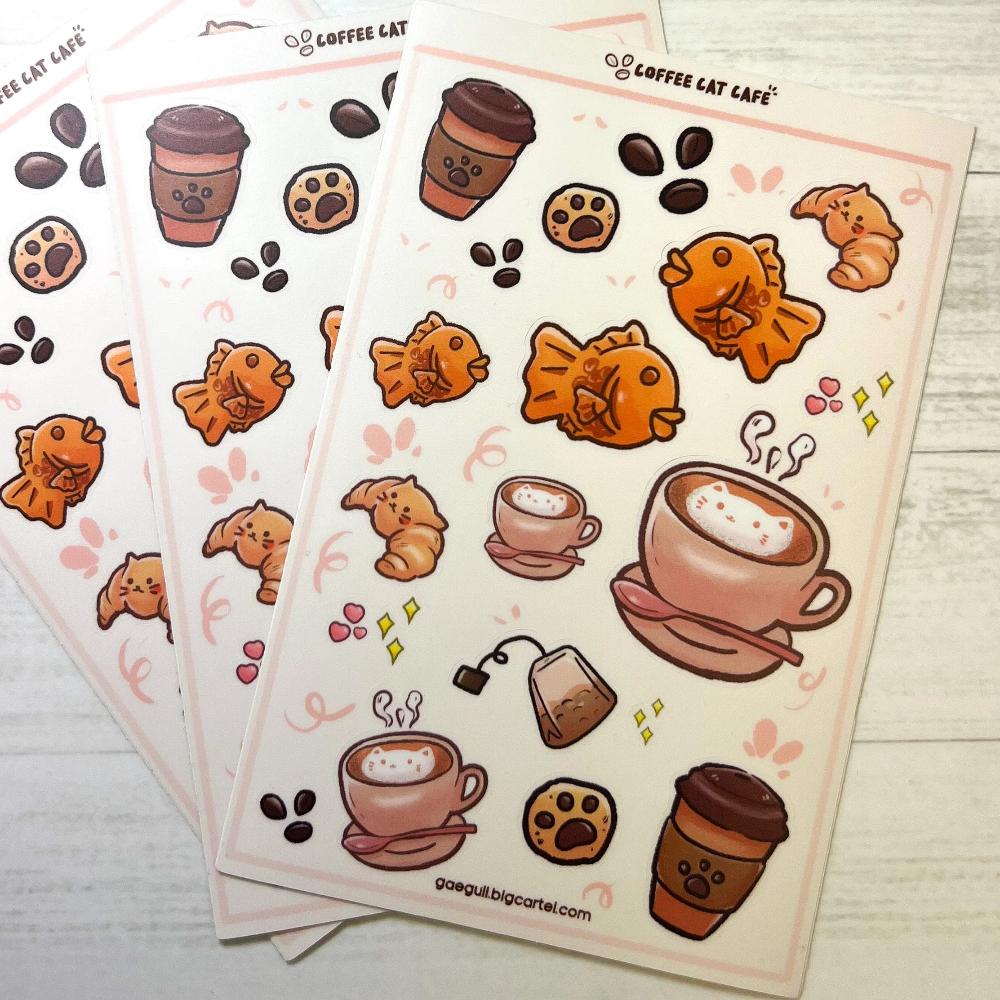
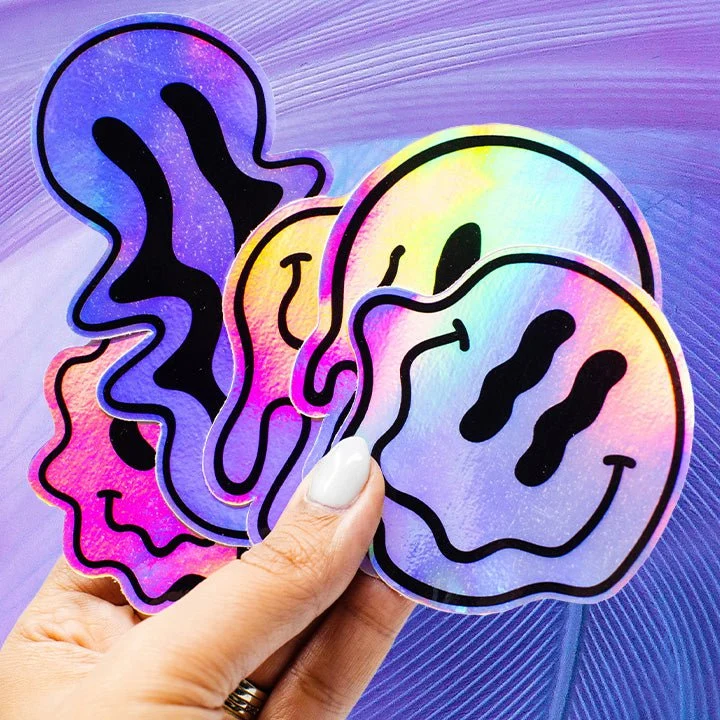
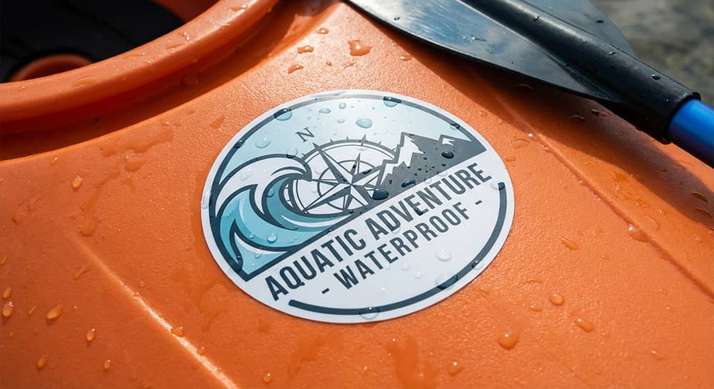
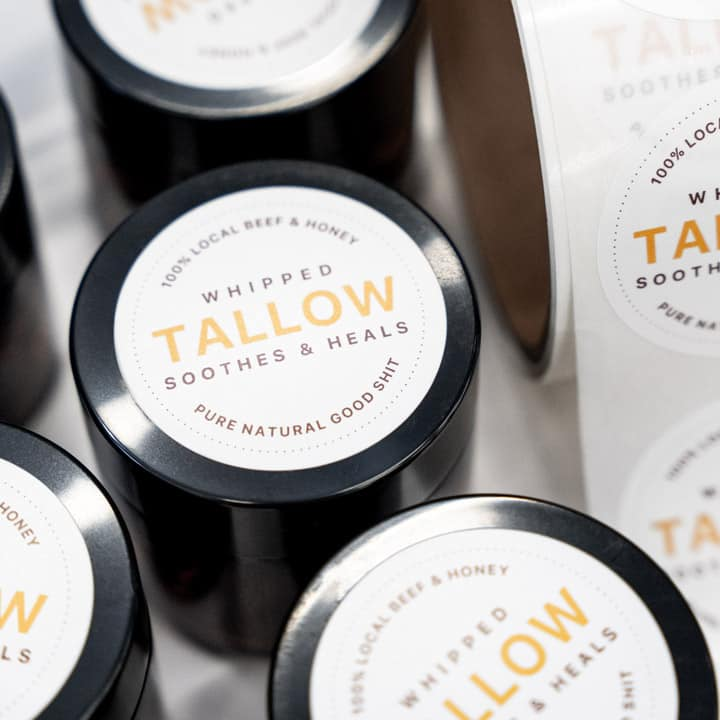

Custom sticker cutting combines digital vector profiling with specialized press-sensitive vinyls and laminates to create durable, high-impact decals. Using automated blade depth control and precise registration marks, our shop cuts clean contours around custom artwork, logos, and lettering. Whether you need individual die-cut stickers that pop out individually or multi-sticker decal sheets, this process delivers crisp edges and flawless alignment every time.
Beyond standard paper decals, our sticker production line is engineered for high-durability outdoor applications. By pairing UV-resistant printable vinyl with protective gloss or matte laminates, we produce stickers that withstand harsh sunlight, water, scratching, and daily wear on water bottles, laptops, toolboxes, and car bumpers.
We utilize precision dual-tool cutting hardware calibrated for clean kiss-cuts, heavy cardstock, and full-depth die-cutting.
| Machine Model | Capabilities | Working Area | Primary Use |
|---|---|---|---|
| Cricut Explore Air 2 | Dual tool head precision blade cutting and scoring | 12" x 24" | Kiss-cut sticker sheets, die-cut decals, and vinyl graphics |
Sticker manufacturing relies on proper adhesive tack, face-film flexibility, and laminate protection. Selecting the correct vinyl and finish combination ensures your stickers peel easily and survive real-world conditions.
A small sample of custom vinyl decals and sticker sheets produced in our shop!

Custom Die-Cut Vinyl Decals

Multi-Design Kiss-Cut Sticker Sheet

Holographic Finish Sticker Art

Weatherproof Outdoor Decals

Matte Product Packaging Labels
Custom Logo Laptop Decals
Quick answers to common questions about our sticker cutting service.
Kiss-cuts slice through the vinyl but leave the backing paper whole, making them great for sticker sheets with multiple designs. Die-cuts cut completely through both the vinyl and backing paper to give you individual stickers shaped to your artwork.
We prefer vector files like SVG, AI, PDF, or high-resolution PNG files with transparent backgrounds (at least 300 DPI) accompanied by a vector cut contour line.
Yes! When printed on our premium vinyl and finished with our UV-protective overlaminate, our stickers are fully waterproof, dishwasher safe, and rated for outdoor weather resistance.
Absolutely! We can add custom offset white borders, drop shadows, or adjust your artwork layout using our design services before cutting.
We accommodate everything from small single-batch custom runs for testing up to large bulk production orders for businesses and events.